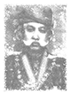

Utama
Visi & Misi
Piagam
Permulaan
Sejarah Tentera Darat Malaysia bermula dengan usaha untuk menubuhkan satu pasukan pertahanan yang dianggotai oleh anak-anak Melayu. Usaha ini bermula semenjak tahun 1902 lagi. Banyak perbincangan oleh Raja-Raja Melayu dan Penasihat-Penasihat British telah dijalankan bagi mengujudkan pasukan ini. Dalam tahun 1913 Almarhum DYMM Yang Dipertuan Besar Negeri Sembilan, Tunku Muhamad ibni Yam Tunku Antah, Almarhum DYMM Sultan Perak, Sultan Alang Iskandar Shah, Almarhum Raja Di Hilir Perak, Raja Sir Chulan dan Allahyarham Undang Rembau, Datuk Abdullah bin Haji Damad telah menyuarakan hasrat menubuhkan pasukan Askar Melayu.
|  |
|
| |
 |
|
Hasrat Raja-Raja ini telah menjadi kenyataan apabila di dalam Persidangan Majlis Mesyuarat Persekutuan pada 23 Januari 1933, Rang Undang-Undang Askar Melayu telah diluluskan dan dikenali sebagai Undang-Undang No. 11.
Bagi menyahut seruan untuk mempertahankan ibu pertiwi, lebih dari seribu pemuda-pemuda Melayu tampil dari pelusuk tanahair telah tampil menawarkan khidmat mereka, tetapi hanya 25 orang sahaja yang berjaya dipilih sebagai pengasas Kompeni Percubaan Pasukan Askar Melayu. Mereka telah diarahkan untuk melapor diri ke Haig Lines (sekarang IPDA), Port Dickson untuk memulakan latihan pada 1 Mac 1933.
Pertama ini telah menjalankan latihan dengan gigih dan penuh tabah, dan pihak pegawai-pegawai British, selaku jurulatih sangat berpuas hati dengan kebolehan, kecekapan serta semangat keperwiraan yang ditunjukkan. Pada pertengahan tahun 1934, Kompeni Percubaan telah diistiharkan sebagai berjaya dengan cemerlangnya dan layak diperbesarkan ke satu batalion yang lengkap. Seterusnya buat julung kali, pada 4 Nov 1936, seramai empat pemuda anggota Skuad Pertama telah ditauliahkan sebagai pegawai dengan pangkat Leftenan Muda. Mereka adalah No. 8 Ariffin bin Haji Sulaiman, No. 12 Ibrahim bin Sidek, No 13 Ismail bin Tahar dan No. 25 Raja Lope Nor Rashid bin Raja Abdul Rahman.
Dengan tercetusnya peprangan di Eropah pada 3 Sep 1939, latihan anggota Askar Melayu telah dipertingkatkan dan kekuatannya diperbesarkan. Pada 1 Dis 1941, Batalion Kedua Askar Melayu telah ditubuhkan bagi menghadapi serangan Tentera Jepun yang sedang mara. Kompeni A, Batalion Kedua adalah unit Askar Melayu pertama menentang Tentera Jepun yang mendarat di Pantai Cinta Berahi (sekarang Pantai Cahaya Bulan), Kelantan pada 8 Dis 1941. Kekuatan Tentera Jepun yang berlipat ganda telah memaksa Kompeni tersebut berundur ke Kuala Krai dan seterusnya Singapura. Di Singapura, Batalion Pertama dan Kedua Askar Melayu telah berjuang bersama Tentera British menentang kemaraan musuh. Askar Melayu telah berjuang dengan penuh semangat di sekitar kawasan Pasir Panjang, Buona Vista, Labrador dan Alexander.
Satu peritiwa yang sukar dilupai dalam sejarah Tentera Darat ialah peristiwa indakan Tentera Jepun menawan Bukit Chandu yang dipertahankan oleh Platun No. 7, Kompeni C, Batalion Pertama Askar Melayu yang diketuai oleh Lt Adnan bin Saidi. Tentera musuh, setelah gagal dalam percubaan yang pertama, mengulangi serangan dengan kekuatan yang berlipat ganda. Di dalam pertempuran yang sengit ini, anggota Platun No. 7 telah berjuang dengan semangat yang gigih tanpa mengaku kalah. Lt Adnan sendiri mengandalikan senjata Lewis Machinegun dan mara mara untuk memberi semangat dan perangsang. Waklaupun mengalami kecederaan, namun beliau telah menunjukkan semangat untuk terus berjuang hingga ke titisan darah terakhir. Akhirnya tentera musuh telah berjaya menawan Bukit Chandu dan Lt Adnan telah ditikam dengan benet dan mayat beliau digantung kepala ke bawah disebatang pokok.